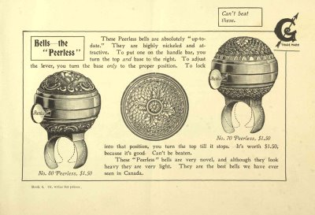

Peal
In days gone by, bells were an integral part of the cycling experience. The bell was the cyclist's voice on the road, the sound creating a space for the cyclist on a street. More than this they are a friendly way of engaging with the street. (A bicycle bell refuses to sound aggressive no matter how angrily you ring it) Bells alert motorists and pedestrians to your presence on the road, and as a result fewer altercations occur. Peal is the name of a community bicycle project initiated by Michael Kelly that is to be undertaken in the weeks preceding the Kerry Bicycle Festival. The project involves the placing of 100 bells on 100 bikes around Tralee. The bells will be painted red so as to be easily identifiable. The distinctive look of the bells will allow cyclists identify each other as fellow unwitting members of this project. We hope to bring this sound back into the streets of Tralee.
